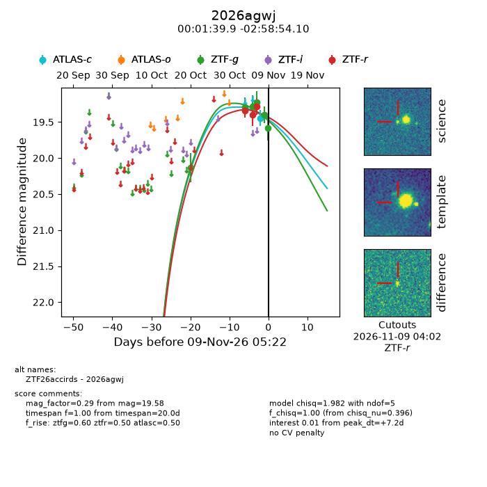
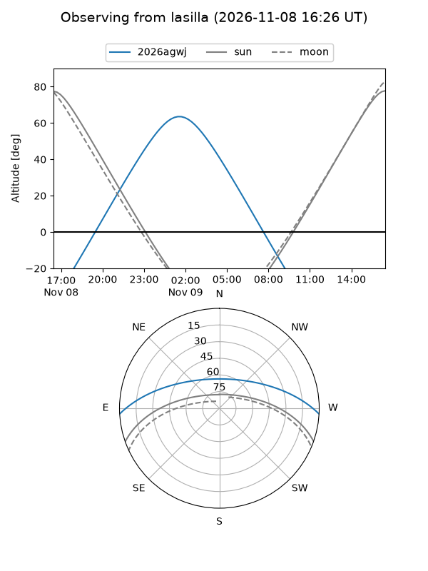
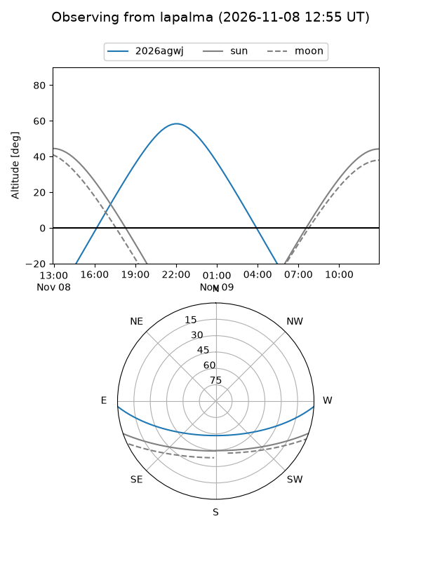
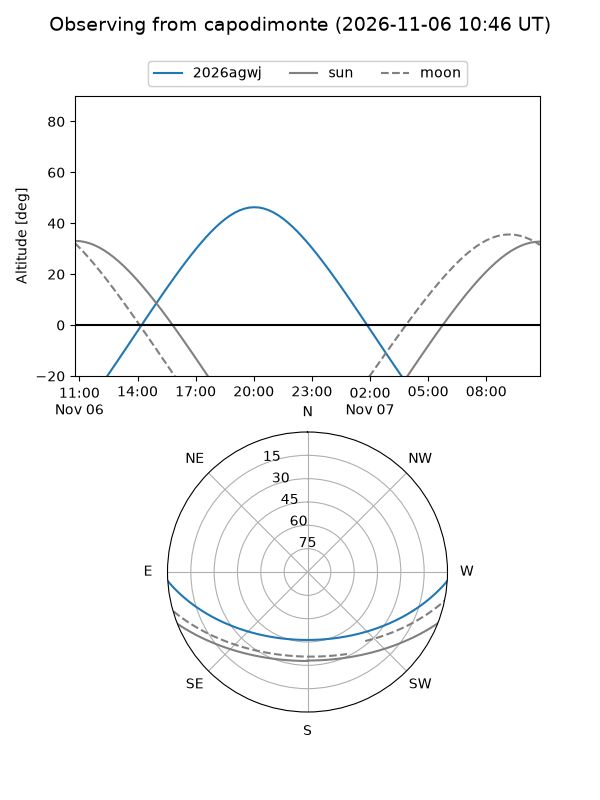
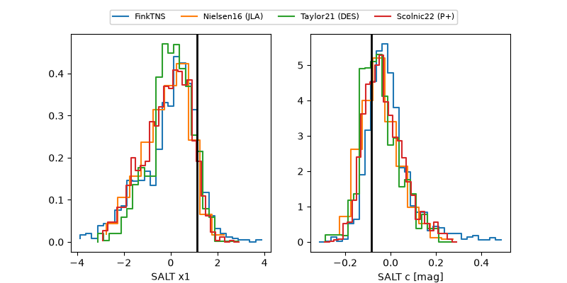

2026agwj
Target 2026agwj at 2026-11-09 05:26
Aliases and brokers:
FINK-ZTF: ztf.fink-portal.org/ZTF26accirds
Lasair-ZTF: lasair-ztf.lsst.ac.uk/objects/ZTF26accirds
ALeRCE-ZTF: alerce.online/object/ZTF26accirds
YSE-PZ: ziggy.ucolick.org/yse/transient_detail/2026agwj
TNS name: wis-tns.org/object/2026agwj
Direct TNS query: direct search
alt names
ZTF26accirds (ztf,fink_ztf)
2026agwj (tns,yse)
Coordinates:
equatorial (ra, dec) = 0.4161,-2.98170
equatorial (HMS+DMS) = 00:01:39.87,-02:58:54.10
galactic (l, b) = (94.5562,-63.07806)
Flags:
peak dt: +7.2
Photometry:
last atlasc=19.44, ztfg=19.58, ztfr=19.28
1 atlasc, 6 ztfg, 3 ztfr detections
Lightcurve

Visibility



Additional plots
